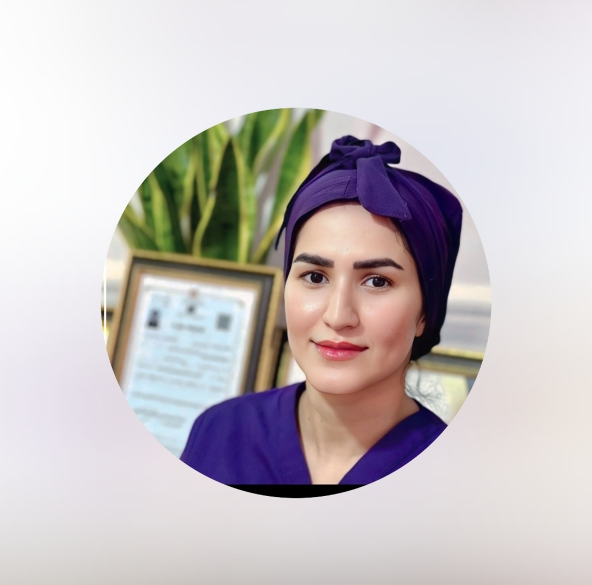

اسیدتراپی
لایهبرداری تخصصی برای تجدید و شفافیت پوست
Emily SKINCARE
اینجا هر پوست، مراقبت خاص خودش رو داره.

خدمات ما ✦
خدمات متناسب با نیاز پوست شما، با محصولات حرفهای و تکنیکهای بهروز.
لایهبرداری تخصصی برای تجدید و شفافیت پوست
بازگرداندن لطافت و شادابی به پوست
کنترل و بهبود جوشها و پیشگیری از بروز مجدد
پاکسازی عمیق و بازسازی پوست با عصاره جلبک دریایی
تحریک کلاژنسازی برای پوستی جوانتر و شفافتر
فهرست خدمات آقایان پس از نهاییشدن پروتکلها و محتوای تأییدشده در همین بخش قرار میگیرد.
درخواست مشاوره ↗A LITTLE ABOUT ME ✦
سلام، من امیلیام! ♡
من امیلیام؛ اسکینتراپیست و متخصص مراقبت از پوست. از سال ۹۹ در زمینه فیشال و مراقبت تخصصی پوست فعالیت میکنم و هدفم اینه که هر مراجعهکننده با حس بهتر و پوستی سالمتر از اینجا بره.
REAL SKIN, REAL STORIES ✦
برای حفظ حریم خصوصی، تصاویر واقعی فقط با رضایت صاحب تصویر منتشر میشوند.
KIND WORDS ✦
نظرات واقعی پس از دریافت متن و اجازه انتشار در این بخش قرار میگیرند.
متن نظر واقعی مشتری پس از تأیید و حذف اطلاعات هویتی اینجا قرار میگیرد.
مراجعهکننده امیلیتجربه شما، با حفظ معنای اصلی و بدون وعده یا امتیاز ساختگی، روایت میشود.
مراجعهکننده امیلیاین جایگاه برای یک نظر واقعی و قابل انتشار از تجربه مراقبت پوست آماده است.
مراجعهکننده امیلیGOOD TO KNOW ✦
پاسخهای تکمیلی پس از تأیید پروتکل خدمات بهروزرسانی میشوند.
برای هماهنگی نوبت از طریق اینستاگرام پیام بدهید. دکمههای تماس به کانالهای واقعی متصل هستند.
دستهبندی خدمات آقایان در حال تکمیل است و پس از تأیید فهرست نهایی اعلام میشود.
تناسب خدمت با شرایط پوست در مشاوره بررسی میشود. متن دقیق مراقبتهای قبل و بعد پس از تأیید درج خواهد شد.
در نسخه فعلی تصاویر نمونهکار placeholder هستند. انتشار هر تصویر واقعی به رضایت صاحب تصویر نیاز دارد.
YOUR SKIN, YOUR RHYTHM ✦
برای قطعی شدن رزرو، پرداخت بیعانهٔ ۲۰۰٬۰۰۰ تومان الزامی است.
EMILY CIRCLE ✦
بهازای هر مراجعهٔ موفق، ۱۰۰٬۰۰۰ تومان هدیه بگیر. بعد از ۱۰ و ۲۰ دعوت موفق، یک فیشال رایگان دریافت میکنی.